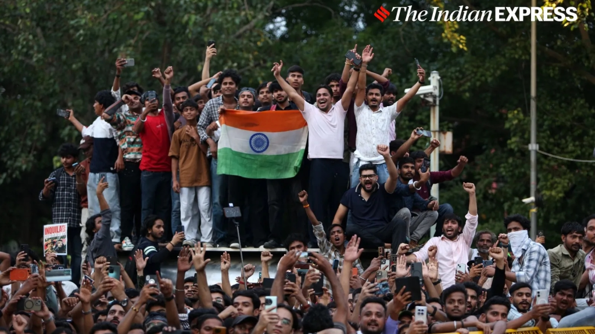

Kerala Home Minister Ramesh Chennithala has ordered a police probe into objectionable remarks allegedly
made by RSS leader T G Mohandas against those who protested in Delhi’s Jantar Mantar demanding the
resignation of Dharmendra Pradhan as Union Education Minister over the NEET question paper leak issue.
A video showed Mohandas purportedly saying that if he was tasked with handling the protest, he would
have imposed a curfew in the Jantar Mantar area. “The crowd would be asked to disperse. The announcement
would be made three times through public address systems. Then, there would be firing. People will run
in a chaotic and hurried manner. Some people will die, others will get injured. Within four hours, the
situation will be under control. The bodies will be moved to hospital,” he purportedly said.
In another video, Mohandas is allegedly heard saying, “Police should be withdrawn from the area, and it
should be left to the protesters. Rapes and murders will happen. There will not be complaints about
rape, because they like rape.”
Author Name: Thamizhselvan
Published Date: Jul 28, 2026 05:36 AM